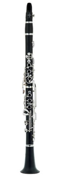

About Me
Hello, I'm Jeffrey
I’m Jeffrey Yoh, a clarinetist and pianist from Orange County, California! I currently attend UC Berkeley’s Haas School of Business majoring in Business Administration and Economics.
While schoolwork keeps me busy, I love to blow off steam through music, improvising piano and clarinet melodies, composing pieces, and tutoring children! Nothing feels better to me than spontaneous jam sessions with friends, creating GarageBand beats, or editing Music Videos!
I look forward to working with you! Here’s my email and LinkedIn- I’d love to have a quick chat!
- 12 Years of Piano & Clarinet Experience
- Distinguished Award on ABRSM Clarinet Level 8
- 5 on AP Music Theory Exam
- Oxford Academy Clarinet Section Leader (2016-2018)
- Oxford Academy Wind Ensemble (2015-2018)
- Oxford Academy Symphony Orchestra (2015-2018)
- AUHSD High School Honor Band (2017-2018)
- UC Berkeley The Music Connection Clarinet Tutor
- UC Berkeley 4-Part Harmony Coursework


